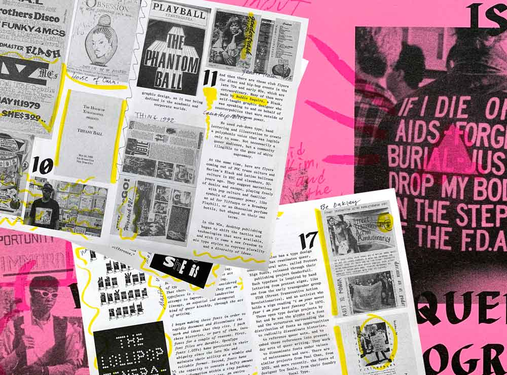
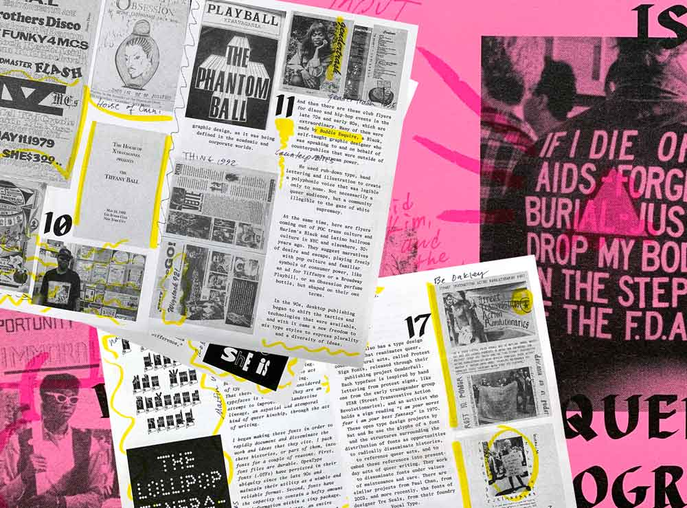

Project A TBD.
Project B TBD.
Project A TBD.
Project B TBD.
This talk describes a publishing practice, told in a series of scenes, non-chronologically. It's a cinematic timeline, told in queer time. Recently, I was in a very bad accident. I tripped in the street and started flying through the air. I landed and broke 12 bones. For a long time, I couldn’t move around. I couldn’t go to school where I was needed, where I’m the head of the graphic design department. I couldn’t go to the studio where I do my work and where I help organize community. For several months, I had a lot of time to reflect. I tried to understand what had happened, and one of the ways I did this was by making these images. I started feeding the details of my accident into a text-to-image generator. I wanted to reconstruct the accident, so I could see it from outside my body. I wanted to see if these images could reveal something about the event, like evidence. Maybe it could show me what had really happened. Maybe I could learn something about my experience that my memory couldn’t provide. I generated thousands of these images; it started to resemble an archive. This was my way of slowing down what had happened. I wanted to occupy the space of that moment, and it felt like this tool could help me.
News 1
Paul Soulellis is an artist and educator based in Providence, RI. His practice includes teaching, writing, and experimental publishing, with a focus on queer methodologies and network culture. He is the founder of Queer.Archive.Work, an independent 501(c)(3) non-profit organization that supports artists, writers, and activists with access to space, tools, and other resources for queer publishing. He is also Department Head and Associate Professor of Graphic Design at Rhode Island School of Design.